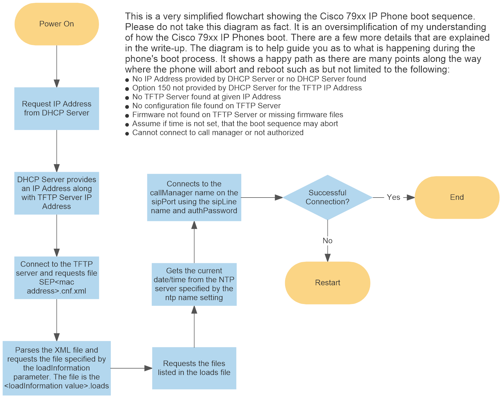

Cisco 79xx IP Phones require that a configuration file be located at the root of the TFTP Server referenced in option 150 of the DHCP Sever that provided the IP Address for the phone. The XML file has several sections and options. The phones require that the XML file is in the expected format and contains valid values. It is easy to have one value off and prevent the phone from setting up properly.
SIP Software is required for Cisco IP Phones to work with FreePBX. Information regarding obtaining, uploading, and configuring the SIP Software and IP Phones is found in the /device/loadInformation section below.
The easiest way to get started with correctly creating a configuration file is by copying an existing template and modifying the values to suite your needs. Once you do that, you are able to go further and add or modify other values by reading the Cisco documentation online. One helpful resource is Cisco Unified IP Phone 7900 Series and Cisco IP Communicator XML Object Support
<?xml version="1.0" ?>
<device>
<deviceProtocol>SIP</deviceProtocol>
<sshUserId>cisco</sshUserId>
<sshPassword>cisco</sshPassword>
<ipAddressMode>0</ipAddressMode>
<devicePool>
<dateTimeSetting>
<dateTemplate>M-D-Ya</dateTemplate>
<timeZone>Eastern Standard/Daylight Time</timeZone>
<ntps>
<ntp>
<name>129.6.15.28</name>
<ntpMode>Unicast</ntpMode>
</ntp>
</ntps>
</dateTimeSetting>
<callManagerGroup>
<members>
<member priority="0">
<callManager>
<name>[RasPBX IP Address]</name>
<description/>
<ports>
<ethernetPhonePort>2000</ethernetPhonePort>
<sipPort>5160</sipPort>
<securedSipPort>5061</securedSipPort>
</ports>
<processNodeName>[RasPBX IP Address]</processNodeName>
</callManager>
</member>
</members>
</callManagerGroup>
<connectionMonitorDuration>120</connectionMonitorDuration>
</devicePool>
<commonProfile>
<phonePassword>anything</phonePassword>
<backgroundImageAccess>true</backgroundImageAccess>
<callLogBlfEnabled>1</callLogBlfEnabled>
</commonProfile>
<loadInformation>SIP41.8-5-4S</loadInformation>
<vendorConfig>
<disableSpeaker>false</disableSpeaker>
<disableSpeakerAndHeadset>false</disableSpeakerAndHeadset>
<pcPort>0</pcPort>
<settingsAccess>1</settingsAccess>
<garp>0</garp>
<voiceVlanAccess>0</voiceVlanAccess>
<videoCapability>0</videoCapability>
<autoSelectLineEnable>0</autoSelectLineEnable>
<webAccess>0</webAccess>
<spanToPCPort>1</spanToPCPort>
<loggingDisplay>1</loggingDisplay>
<loadServer></loadServer>
<sshAccess>1</sshAccess>
</vendorConfig>
<userLocale>
<name>English_United_States</name>
<uid>1</uid>
<langCode>en_US</langCode>
<version>1.0.0.0-1</version>
<winCharSet>iso-8859-1</winCharSet>
</userLocale>
<networkLocale>United_States</networkLocale>
<networkLocaleInfo>
<name>United_States</name>
<uid>64</uid>
<version>1.0.0.0-4</version>
</networkLocaleInfo>
<deviceSecurityMode>1</deviceSecurityMode>
<authenticationURL>http://[RasPBX IP Address]/cisco/authenticate.php</authenticationURL>
<directoryURL>http://[RasPBX IP Address]/cisco/directory.php?xtn=[User Extension]</directoryURL>
<idleURL></idleURL>
<informationURL></informationURL>
<messagesURL></messagesURL>
<servicesURL>http://[RasPBX IP Address]/xmldir/PhoneUI/</servicesURL>
<transportLayerProtocol>2</transportLayerProtocol>
<certHash></certHash>
<encrConfig>false</encrConfig>
<sipProfile>
<sipProxies>
<registerWithProxy>true</registerWithProxy>
</sipProxies>
<sipCallFeatures>
<cnfJoinEnabled>true</cnfJoinEnabled>
<rfc2543Hold>false</rfc2543Hold>
<callHoldRingback>2</callHoldRingback>
<localCfwdEnable>true</localCfwdEnable>
<semiAttendedTransfer>true</semiAttendedTransfer>
<anonymousCallBlock>2</anonymousCallBlock>
<callerIdBlocking>2</callerIdBlocking>
<dndControl>0</dndControl>
<remoteCcEnable>true</remoteCcEnable>
</sipCallFeatures>
<sipStack>
<sipInviteRetx>6</sipInviteRetx>
<sipRetx>10</sipRetx>
<timerInviteExpires>180</timerInviteExpires>
<timerRegisterExpires>3600</timerRegisterExpires>
<timerRegisterDelta>5</timerRegisterDelta>
<timerKeepAliveExpires>120</timerKeepAliveExpires>
<timerSubscribeExpires>120</timerSubscribeExpires>
<timerSubscribeDelta>5</timerSubscribeDelta>
<timerT1>500</timerT1>
<timerT2>4000</timerT2>
<maxRedirects>70</maxRedirects>
<remotePartyID>true</remotePartyID>
<userInfo>None</userInfo>
</sipStack>
<autoAnswerTimer>1</autoAnswerTimer>
<autoAnswerAltBehavior>false</autoAnswerAltBehavior>
<autoAnswerOverride>true</autoAnswerOverride>
<transferOnhookEnabled>false</transferOnhookEnabled>
<enableVad>false</enableVad>
<preferredCodec>g711ulaw</preferredCodec>
<dtmfAvtPayload>101</dtmfAvtPayload>
<dtmfDbLevel>3</dtmfDbLevel>
<dtmfOutofBand>avt</dtmfOutofBand>
<alwaysUsePrimeLine>false</alwaysUsePrimeLine>
<alwaysUsePrimeLineVoiceMail>false</alwaysUsePrimeLineVoiceMail>
<kpml>3</kpml>
<stutterMsgWaiting>0</stutterMsgWaiting>
<callStats>false</callStats>
<silentPeriodBetweenCallWaitingBursts>10</silentPeriodBetweenCallWaitingBursts>
<disableLocalSpeedDialConfig>false</disableLocalSpeedDialConfig>
<startMediaPort>10000</startMediaPort>
<stopMediaPort>20000</stopMediaPort>
<phoneLabel>[Phone Label]</phoneLabel>
<natEnabled>false</natEnabled>
<sipLines>
<line button="1">
<featureID>9</featureID>
<featureLabel>[Line Label]</featureLabel>
<name>[User Extension]</name>
<displayName>[User Extension]</displayName>
<contact>[User Extension]</contact>
<proxy>USECALLMANAGER</proxy>
<port>5160</port>
<autoAnswer>
<autoAnswerEnabled>2</autoAnswerEnabled>
</autoAnswer>
<callWaiting>3</callWaiting>
<authName>[User Extension]</authName>
<authPassword>[Extension Secret]</authPassword>
<sharedLine>false</sharedLine>
<messageWaitingLampPolicy>1</messageWaitingLampPolicy>
<messagesNumber>*97</messagesNumber>
<ringSettingIdle>4</ringSettingIdle>
<ringSettingActive>5</ringSettingActive>
<forwardCallInfoDisplay>
<callerName>true</callerName>
<callerNumber>false</callerNumber>
<redirectedNumber>false</redirectedNumber>
<dialedNumber>true</dialedNumber>
</forwardCallInfoDisplay>
</line>
<line button="2">
<featureID>9</featureID>
<featureLabel>[Line Label]</featureLabel>
<name>[User Extension]</name>
<displayName>[User Extension]</displayName>
<contact>[User Extension]</contact>
<proxy>USECALLMANAGER</proxy>
<port>5160</port>
<autoAnswer>
<autoAnswerEnabled>2</autoAnswerEnabled>
</autoAnswer>
<callWaiting>3</callWaiting>
<authName>[User Extension]</authName>
<authPassword>[Extension Secret]</authPassword>
<sharedLine>false</sharedLine>
<messageWaitingLampPolicy>1</messageWaitingLampPolicy>
<messagesNumber>*97</messagesNumber>
<ringSettingIdle>4</ringSettingIdle>
<ringSettingActive>5</ringSettingActive>
<forwardCallInfoDisplay>
<callerName>true</callerName>
<callerNumber>false</callerNumber>
<redirectedNumber>false</redirectedNumber>
<dialedNumber>true</dialedNumber>
</forwardCallInfoDisplay>
</line>
</sipLines>
<voipControlPort>5060</voipControlPort>
<dscpForAudio>184</dscpForAudio>
<ringSettingBusyStationPolicy>0</ringSettingBusyStationPolicy>
<dialTemplate>dialplan.xml</dialTemplate>
</sipProfile>
<versionStamp>001</versionStamp>
<dialToneSetting>2</dialToneSetting>
</device>
Below is the list of timezones from CME 7.0
<1-53> select timezone name used by IP phones (offset in minutes)
1 Dateline Standard Time -720
2 Samoa Standard Time -660
3 Hawaiian Standard Time -600
4 Alaskan Standard/Daylight Time -540
5 Pacific Standard/Daylight Time -480
6 Mountain Standard/Daylight Time -420
7 US Mountain Standard Time -420
8 Central Standard/Daylight Time -360
9 Mexico Standard/Daylight Time -360
10 Canada Central Standard Time -360
11 SA Pacific Standard Time -300
12 Eastern Standard/Daylight Time -300
13 US Eastern Standard Time -300
14 Atlantic Standard/Daylight Time -240
15 SA Western Standard Time -240
16 Newfoundland Standard/Daylight Time -210
17 E. South America Standard/Daylight Time -180
18 SA Eastern Standard Time -180
19 Mid-Atlantic Standard/Daylight Time -120
20 Azores Standard/Daylight Time -60
21 GMT Standard/Daylight Time +0
22 Greenwich Standard Time +0
23 W. Europe Standard/Daylight Time +60
24 GTB Standard/Daylight Time +60
25 Egypt Standard/Daylight Time +60
26 E. Europe Standard/Daylight Time +60
27 Romance Standard/Daylight Time +120
28 Central Europe Standard/Daylight Time +120
29 South Africa Standard Time +120
30 Jerusalem Standard/Daylight Time +120
31 Saudi Arabia Standard Time +180
32 Russian Standard/Daylight Time +180
33 Iran Standard/Daylight Time +210
34 Caucasus Standard/Daylight Time +240
35 Arabian Standard Time +240
36 Afghanistan Standard Time +270
37 West Asia Standard Time +300
38 Ekaterinburg Standard Time +300
39 India Standard Time +330
40 Central Asia Standard Time +360
41 SE Asia Standard Time +420
42 China Standard/Daylight Time +480
43 Taipei Standard Time +480
44 Tokyo Standard Time +540
45 Cen. Australia Standard/Daylight Time +570
46 AUS Central Standard Time +570
47 E. Australia Standard Time +600
48 AUS Eastern Standard/Daylight Time +600
49 West Pacific Standard Time +600
50 Tasmania Standard/Daylight Time +600
51 Central Pacific Standard Time +660
52 Fiji Standard Time +720
53 New Zealand Standard/Daylight Time +720